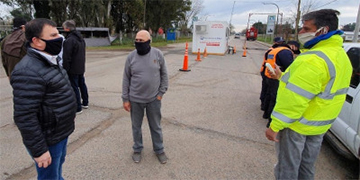
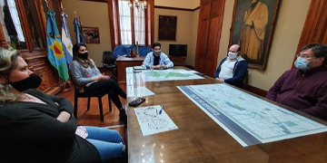

Últimas noticias

El Intendente visitó Cacharí para analizar la situación sanitaria
Esta mañana en la Delegación Municipal de Cacharí, el intendente Hernán Bertellys encabezó una conferencia de prensa en la que se refirió a la situación en la localidad, a partir de la detección de tres casos positivos de COVID 19. El jefe comunal estuvo acompañado por el jefe de Gabinete y Gobierno Alejandro Vieyra, el secretario de Salud Carlos Bravo...
seguir leyendo

Modificación de horarios comerciales
Esta tarde se realizó una reunión en la que se establecieron nuevos horarios para el sector comercial que fueron requeridos por los comerciantes y entidades que los representan.
En la oportunidad, estuvieron presentes el jefe de Gabinete y Gobierno Alejandro Vieyra; la secretaria de Producción, Empleo y Desarrollo Sostenible Alejandra Pais; la subsecretaria López...
seguir leyendo
Personas infraccionadas por violar la cuarentena
La Municipalidad informa a la comunidad que según datos aportados por la Policía de la Provincia, 1.262 personas fueron infraccionadas en el Partido por violar el aislamiento social, preventivo y obligatorio dispuesto por el Gobierno Nacional, desde su inicio a la fecha.Los datos surgen del relevamiento efectuado con las diferentes fuerzas policiales, respecto a la...
seguir leyendo